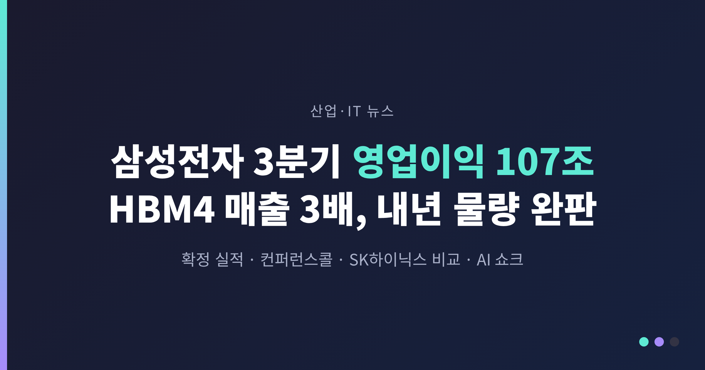
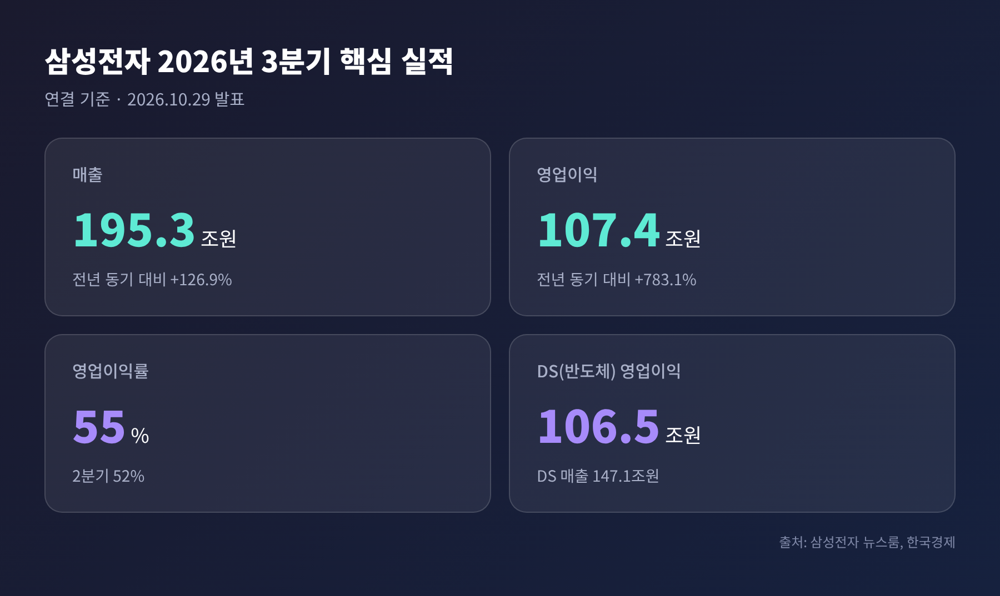
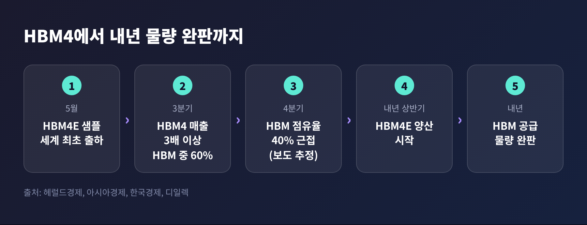
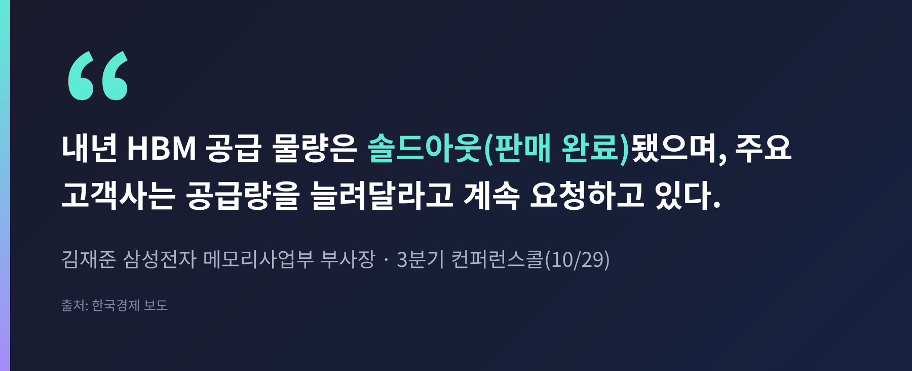
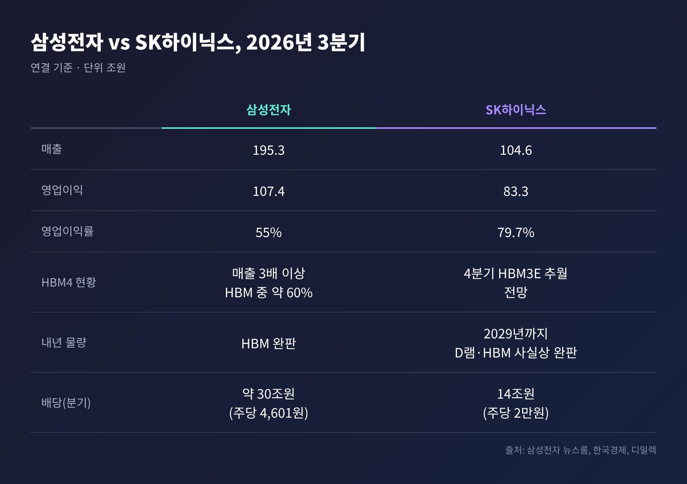
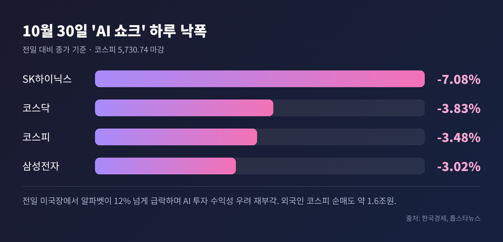

오늘은 10월 29일 발표된 삼성전자 3분기 확정 실적과 컨퍼런스콜을 정리해 보려 합니다.
영업이익은 107조 4,405억원으로 분기 기준 사상 최대였고, HBM4 매출은 전 분기보다 3배 이상 늘었으며, 내년 HBM 공급 물량은 이미 완판됐다고 회사가 밝혔습니다.
다만 이튿날 코스피는 3.48% 급락했습니다. 좋은 숫자와 불안한 시장이 한꺼번에 나온 이유를 차례로 살펴보겠습니다.
삼성전자가 10월 29일 발표한 3분기 연결 실적은 다음과 같습니다.
매출과 영업이익 모두 4분기 연속 역대 최대입니다.
이투데이 등은 글로벌 기술기업 가운데 분기 영업이익이 100조원을 넘은 것은 처음이라고 전했습니다.

이익의 거의 전부는 반도체에서 나왔습니다.
DS(반도체) 부문 매출은 147조 1,000억원, 영업이익은 106조 5,000억원입니다. 영업이익률로 따지면 약 72%에 달합니다.
메모리 매출만 140조 7,000억원으로 전사 매출의 약 72%를 차지했습니다.
반대편은 사정이 달랐습니다.
완제품(DX) 부문은 영업손실 8,000억원을 냈습니다. 지난해 같은 기간에는 3조 5,000억원 이익이었습니다.
메모리 가격이 오르면 삼성전자의 반도체는 웃고, 스마트폰과 TV는 부품 원가 부담을 떠안는 구조입니다.
환율도 변수였습니다. 회사는 전 분기 대비 영업이익이 환율 영향으로 약 10조원 줄었다고 설명했습니다.
이번 실적의 핵심 단어는 HBM4입니다.
컨퍼런스콜에서 김재준 부사장은 3분기 HBM4 매출이 전 분기 대비 3배 이상 늘었고, 전체 HBM 매출에서 HBM4가 차지하는 비중이 약 60%까지 커졌다고 밝혔습니다.
HBM은 AI 가속기 옆에 얹히는 고대역폭 메모리입니다.
HBM4는 이 시리즈의 6세대 제품이고, 엔비디아의 차세대 가속기 '베라 루빈'에 탑재되는 것으로 알려져 있습니다.
삼성전자는 하반기 HBM 점유율을 전체 D램 점유율 수준으로 끌어올린다는 목표를 3분기에 이미 달성한 것으로 보인다고 말했습니다. 한국경제는 2분기 D램 점유율 38%를 근거로 HBM 점유율이 40%에 가까울 것으로 추정했습니다. 회사가 직접 밝힌 수치는 아니라는 점은 짚어 둡니다.

수급 전망도 강했습니다.

김재준 부사장의 발언은 한국경제가 전한 내용입니다.
대형 고객사 10곳과는 장기공급계약(LTA)을 맺었고, 다른 10곳과 추가로 협상 중입니다. 2030년까지 생산능력 대비 LTA 비중을 60~70%로 높이는 것이 목표입니다.
3분기 D램 평균판매가는 전 분기보다 약 20% 올랐고, 낸드는 10%대 후반 올랐습니다.
회사는 타이트한 공급이 2028년까지 이어질 수 있다고 봤습니다. 신규 공장은 짓는 데 시간이 걸리고, HBM4E·HBM5는 칩이 커져 같은 웨이퍼에서 나오는 물량이 줄기 때문입니다.
SK하이닉스는 하루 앞선 10월 28일 3분기 실적을 냈습니다.
매출 104조 6,155억원, 영업이익 83조 3,338억원으로 이쪽도 분기 사상 최대입니다. 영업이익률은 79.7%였습니다.

정리하면 이렇습니다.
절대 규모는 삼성전자가 앞섰고, 수익성은 SK하이닉스가 앞섰습니다. 삼성전자는 완제품 부문의 부담이 있고, SK하이닉스는 메모리에 집중한 구조라는 차이가 있습니다. 이는 소스에 적힌 수치를 바탕으로 한 저의 해석입니다.
HBM 경쟁구도에서는 변화의 조짐이 보입니다.
번스타인은 3분기 HBM 매출을 삼성전자 약 87억 달러, SK하이닉스 약 76억 달러로 추정했습니다. 삼성이 처음으로 앞설 수 있다는 계산입니다. 지역별 수출 통계로 뽑은 추정치이지 확정 실적은 아닙니다.
카운터포인트리서치 기준 2분기 점유율은 SK하이닉스 50%, 삼성전자 33%, 마이크론 18%였습니다. SK하이닉스는 1년 전 64%에서 내려온 수치입니다.
엔비디아 공급 비중은 확정된 숫자가 없습니다.
올해 2월 세미애널리시스는 베라 루빈용 HBM4를 SK하이닉스 약 70%, 삼성전자 약 30%가 맡고 마이크론은 밀려날 것으로 전망했습니다. 지금 실제 배분이 그대로인지는 이번 컨퍼런스콜 소스에서 확인되지 않습니다.
SK하이닉스는 4분기에 HBM4가 출하량과 매출 모두에서 HBM3E를 넘어설 것으로 내다봤고, 2029년까지 D램과 HBM 물량이 사실상 솔드아웃이라고 밝혔습니다.
두 회사가 같은 방향의 호황을 말하고 있는 셈입니다. 업계 관계자는 승부처를 HBM4 수율, 적층 공정 생산성, 베이스다이 성능, 고객 인증으로 꼽았습니다.
삼성전자 이사회는 3분기 현금배당으로 주당 4,601원, 총 약 30조원을 의결했습니다. 11월에 지급됩니다.
올해 주주환원 목표는 90조~110조원이고, 이미 집행되었거나 확정된 금액이 약 35조원입니다. 남은 55조~75조원은 배당과 자사주 매입·소각에 쓰일 예정입니다.
그럼에도 발표 당일 주가는 4.13% 하락한 23만 2,000원에 마감했습니다.
뉴스1은 남은 환원 계획의 구체안이 나오지 않은 점을 이유로 들었습니다. 세부안은 내년 1월 말께 공개됩니다.
참고로 SK하이닉스는 배당 14조원과 자사주 매입 20조원을 이미 결의했습니다. 시장은 두 회사의 환원 속도를 비교하고 있는 셈입니다.
실적 이튿날인 10월 30일, 코스피는 5,730.74로 마감하며 3.48% 떨어졌습니다. 장중에는 5% 넘게 빠져 매도 사이드카가 발동됐습니다.
삼성전자는 3.02%, SK하이닉스는 7.08% 하락했고, 외국인은 코스피에서 약 1조 6,170억원어치를 순매도했습니다.

촉발 요인은 미국 빅테크였습니다.
10월 29일 미국장에서 알파벳이 12% 넘게 급락했고, 나스닥은 1.38%, 필라델피아반도체지수는 1.42% 내렸습니다. 거대한 AI 투자가 언제 수익으로 돌아오느냐는 의심이 다시 커진 것입니다.
서울경제는 이를 'AI 수익성 공포'로 불렀습니다. 같은 날 환율은 1,334.3원으로 안정적이었습니다. 금리나 환율보다 AI 투자와 반도체 수급에 대한 불안이 주가를 흔들었다는 해석입니다.
고점론은 이렇게 갈립니다.
회의론의 근거는 이렇습니다. BNK투자증권은 빅테크의 AI 투자 증가율이 올해 3분기에 정점일 수 있다고 봤습니다. 서울경제 집계로는 코스피 4분기 영업이익 추정치의 73.4%를 삼성전자와 SK하이닉스가 차지합니다. 두 회사를 빼면 추정치는 한 달 새 약 2.0% 내렸습니다.
낙관론의 근거도 있습니다. 삼성전자는 2027년에도 전례 없는 메모리 수요가 이어지고 2028년까지 공급이 빠듯하다고 주장합니다. 유안타증권은 타이트한 수급이 2028년까지 이어질 가능성을 높게 봤고, DS투자증권은 내년 영업이익 추정치를 612조원에서 632조원으로 올렸습니다.
숫자 하나가 눈에 띕니다.
최근 한 달간 삼성전자의 4분기 영업이익 추정치는 3.32% 내린 116조 7,700억원, 주가는 14.86% 하락했습니다. SK하이닉스 추정치는 13.92% 오른 100조 9,700억원이었는데 주가는 13.54% 내렸습니다.
이익 전망과 주가가 따로 움직인 것입니다. 호황을 의심해서라기보다, 호황의 지속 가능성에 값을 매기는 방식이 달라졌다고 보는 편이 맞겠습니다.
이런 변동성은 낯설지 않습니다. 10월 15일에도 코스피는 7%대 하락했고, 서킷브레이커가 발동됐습니다.
회사가 내놓은 큰 그림은 분명합니다.
4분기에는 HBM4와 고성능 DDR5, 서버 SSD 판매가 늘고, 내년 상반기에는 HBM4E 양산이 시작됩니다. 파운드리에서는 올해 2나노 수주 과제가 전년 대비 2배 이상 늘 것으로 보고 있고, 텍사스 테일러 공장도 클린룸 가동과 장비 반입이 진행 중입니다.
올해 시설투자 계획은 84조 4,000억원입니다.
한계도 분명합니다.
첫째, 수요가 AI 투자에 기대고 있다는 점입니다. 빅테크의 투자 여력이 꺾이면 호황의 속도도 달라집니다.
둘째, 이익의 쏠림입니다. DX는 적자이고, 메모리 원가 부담은 2027년에도 이어질 것으로 회사가 전망했습니다.
셋째, 해석의 차이입니다. 4분기 HBM 1위 전망이나 점유율 40%는 모두 보도 속 추정입니다.
지켜볼 일정은 내년 1월 말 주주환원 세부안, 4분기 실적과 HBM4E 양산 진행 상황입니다.
끝으로 한 마디만 더 드리겠습니다.
이번 분기의 질문은 '얼마나 벌었는가'에서 '얼마나 오래 이 속도가 이어지는가'로 옮겨 갔습니다.
"숫자는 이미 증명됐고, 시장은 지속성을 묻고 있다."
다음 분기 성적표가 그 질문에 어떤 답을 줄지, 차분히 지켜보시길 권합니다.
※ 이 글은 공개된 기사와 기업 발표를 바탕으로 한 정보 정리이며, 특정 종목의 매수·매도를 권유하지 않습니다. 투자 판단과 그 결과의 책임은 투자자 본인에게 있습니다. 수치는 2026년 10월 31일 기준 확인된 보도를 따랐고, 일부는 매체의 추정치입니다.
참고: 삼성전자 뉴스룸, 한국경제, 헤럴드경제, 아시아경제, 디일렉, 이투데이, 서울경제, 파이낸셜뉴스(뉴스1), 톱스타뉴스, 마이데일리